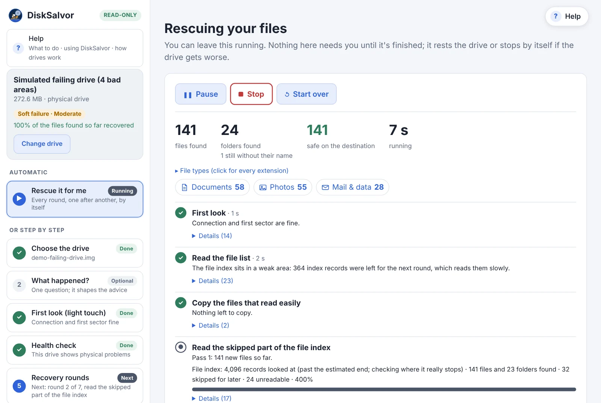
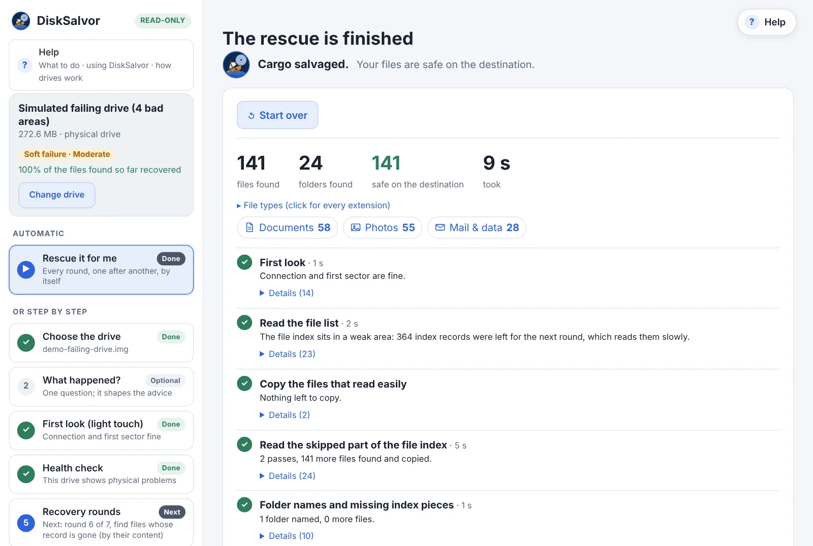

Data recovery for failing drives
Get your files off a failing drive. Free, no limits.
Your drive "needs formatting", crawls, or keeps disconnecting. DiskSalvor gets your files off it without making things worse: it reads gently, takes the easy files first, goes back for the rest round by round, and tells you what it's doing and why.
No file limits · no size limits · no paid "Pro" edition · no account · no ads or tracking. The source code goes public on GitHub after the current round of testing.

Proven on real hardware
A real failing drive
A 2 TB WD USB drive whose boot sector and the start of its file index were unreadable: Windows only offered to format it. What DiskSalvor got back:
Our purpose
Why DiskSalvor
When a drive fails, the last thing you need is a hassle trying to get your family photos and documents back.
Why it exists
It started with a failing drive of our own, and no tool that did the job well: trials that stop at 2 GB, apps that hammer a weak drive for hours, advice that makes things worse. We needed a calm, careful way to get everything back, so we built it.
Why it's free
What's on a failing drive is often irreplaceable. Getting it back shouldn't depend on paying before you even know what can be saved. No trial, no file limits, no "Pro" edition.
Why open source
A recovery tool needs full access to your drive. Open source (MIT) means anyone can check that it only reads, and anyone can improve it for the next kind of failing drive.
No limits
Free data recovery, with no limits. Really.
Most "free" recovery apps stop after 100 MB to 2 GB and ask you to pay for the rest. DiskSalvor recovers everything it can reach, at no cost, and its source code is open (MIT), so anyone can check exactly what it does to your drive: it only reads.
Drives
External USB hard drives (WD My Passport, Seagate, Toshiba and others), internal hard drives and SSDs, USB sticks, SD and camera cards, and disk images.
File systems
Lists files and folders on NTFS, FAT32 and exFAT, including when Windows calls the drive RAW or says it needs formatting. Other file systems (ext4, APFS, HFS+ and more) are recognised and named, but their files can't be listed yet.
Symptoms
"You need to format the disk", "the parameter is incorrect", drives that crawl, freeze, disconnect, or have bad sectors. Clicking or grinding: see a lab.
How it works
Round by round, by itself
Pick the drive and a folder on another drive, and choose Rescue it for me. DiskSalvor runs every round by itself, copying after each one. Or go step by step and start each round yourself.
A first look, with a light touch
The drive's own health log, what Windows has already logged about it (bad blocks, retries, disconnects: on a memory card, often the only sign it's failing), and a single timed read. If the drive clicks or isn't detected, DiskSalvor says so and stops: that's a job for a recovery lab.
The file list, skipping the weak parts
Where the drive struggles, DiskSalvor moves on and comes back later. Nothing it reads is ever read twice, even after a restart.
Copy what reads easily, most important first
Photos, documents, whatever matters most to you, in the order you choose. With dates and folders kept.
Go back for what was skipped
Slowly and carefully, piece by piece, as long as it keeps finding files. Lost folder names are searched for where your data is first.
A careful retry of damaged files
Only the missing pieces are read again, and patched into the copies you already have.
A report you can keep
What was recovered, what's missing and why, the drive's condition, and what to do (and not do) with it next.

A finished rescue: what was found, what's safe, and what still has unreadable parts.
Professional toolkit
For experts: every tool, free
Next to the guided rescue, the tools a data recovery professional reaches for. Like the rescue, they only read the drive, they use what the rescue already learned (so looking around doesn't read it again), and each one explains what it shows.
Hex editor, explained
The raw sectors, with every known structure (partition tables, boot sectors, file records) coloured field by field. Point at a byte to see what it means. Read-only.
Read map and problem areas
The whole disk as a strip: what read fine, slowly, or not at all. Each bad area shows which structures and which of your files it hits.
File browser and preview
Every file the drive still knows about, deleted ones too, with how likely each is to come back. Search, preview photos, PDFs and more, or save a single file.
Lost-partition scan
Searches the disk for file systems a damaged partition table no longer points to, and rates how sure each find is.
Safe copy (imaging)
One copy of the whole failing drive, easy parts first, with a map of what's still missing. Stop it and resume any time.
Health log and drive tests
The drive's own S.M.A.R.T. log in plain English, what Windows has logged about it, and timed test reads at any spot to see how it fails.
Cluster map
Which parts of a volume are in use: where your data is, and how much empty space a safe copy can skip.
Event log
Every unreadable sector, hang and slow read, with where it was and how long it took.
Reports and exports
A disk report, the full file list as a spreadsheet, raw sectors as a file, and the run's own log.
Comparison
How it compares
The tools people reach for today, and where DiskSalvor is different. Prices and free limits as checked in November 2026; they change, so check each vendor before relying on them.
| DiskSalvor | EaseUS, Disk Drill, Stellar | Recuva | R-Studio, DMDE | TestDisk / PhotoRec | ddrescue, OpenSuperClone | |
|---|---|---|---|---|---|---|
| Free, with no recovery limit | ✓ | ✗ 100 MB–2 GB free | ✓ | ✗ | ✓ | ✓ |
| Open source | ✓ (soon) | ✗ | ✗ | ✗ | ✓ | ✓ |
| Keeps file names and folders | ✓ | ✓ | ✓ | ✓ | ✗ | |
| File preview before you recover (photos, PDFs, text, music, video) | ✓ | ✓ | ✗ | ✗ | ||
| Built for failing drives: own time limits, weak areas last | ✓ | ✗ | ✗ | ✗ | ✓ | |
| Never reads the same bad spot twice | ✓ | ✗ | ✓ | |||
| Files straight off the drive: no spare drive as big as it, no second tool | ✓ | ✓ | ✓ | ✓ | ✓ | ✗ |
| Easiest files first, round by round, automatic | ✓ | ✗ | ✗ | ✗ | ✗ | |
| Retries only the missing pieces of damaged files | ✓ | ✗ | ✗ | ✗ | ✗ | ✗ |
| Drive health check built in (what CrystalDiskInfo shows), explained in plain English | ✓ | ✗ | ✗ | ✗ | ||
| Safe copy (image) of the whole drive | ✓ | ✗ | ✓ | ✓ | ||
| Expert tools: hex editor, disk maps, lost-partition search | ✓ | ✗ | ✗ | ✓ | ||
| Says what's wrong with the drive, in plain English | ✓ | ✗ | ✗ | ✗ | ✗ | |
| A Windows app anyone can use | ✓ | ✓ | ✓ | ✗ Linux, command line |
✓ yes · partly · ✗ no. Product names belong to their owners and are used only for comparison.
Where others are still ahead, for now
DiskSalvor is new and growing fast. If something you need is on this list, ask for it: requests decide what comes next.
- More file systems. DiskSalvor lists files on NTFS, FAT and exFAT; R-Studio, DMDE and others cover far more for now, and RAID. More are being added fast: request the one you need
- Files whose record is lost, found by their content. Every file the drive still lists is rescued, whatever its type. When a file's entry in the drive's index is gone, DiskSalvor can find it by its content for the common types so far (JPEG, PNG, GIF, HEIC, WebP, MP4, MOV, AVI, WAV, PDF, Word, Excel, PowerPoint, ZIP, 7z, SQLite), and more are being added fast; PhotoRec knows more than 480. Request the ones you need
- Years of use. The others have been around for years. DiskSalvor is new: every change is tested against simulated failing drives, and its real rescue of a failing 2 TB WD drive is shown above.
- Repairing the drive's file system. TestDisk and DMDE can rewrite a damaged boot sector or partition table so Windows opens the drive again. DiskSalvor doesn't, on purpose: on a failing drive the files come first, and a repair writes to it. A repair step after the files are safe is planned.
- Bootable rescue, and file preview for more types. Several offer a boot USB for a computer that won't start; DiskSalvor doesn't yet. DiskSalvor previews photos, PDFs, text, music and video before you recover them; EaseUS, Disk Drill and Stellar also preview Office documents and camera raw photos. Ask for what you need
- Hardware-level rescue. For drives with failing heads, OpenSuperClone (with the right setup) and lab equipment can skip a bad head or power-cycle a stuck drive. That's beyond any normal recovery app, DiskSalvor included.
- Windows only for now. Linux and macOS are planned. Ask for yours
Help and support
Help for a failing drive, free
Plain-English guides, whatever tool you end up using. If your drive is failing right now: don't format it, don't run CHKDSK or "Scan and fix", and don't keep retrying the copy.
What to do first
Asks to be formatted, not detected, 0 bytes, clicking, very slow: six questions that lead to what to do, and when only a recovery lab can help.
Help
Using DiskSalvor screen by screen, and how drives work, illustrated.
FAQ
Is it really free, is it safe on a failing drive, what it can and can't recover.
Support
E-mail us, report a problem, or ask for a drive, file system or file type DiskSalvor doesn't handle yet.